丨


AR 沉浸花瓣体验
开启摄像头，沉浸在漫天花瓣之中
转动设备，感受 360° 环绕花海
需要授权摄像头和陀螺仪权限

AR 沉浸花瓣体验
开启摄像头，沉浸在漫天花瓣之中
转动设备，感受 360° 环绕花海
需要授权摄像头和陀螺仪权限

伸出手掌
花瓣会轻轻落在你手上

自由舞动身体
花瓣将随你飞旋
欢迎使用「局部地区有花雨」AR 沉浸花瓣体验服务（以下简称"本服务"）。本服务由深圳市腾讯计算机系统有限公司（以下简称"我们"）提供。
在您勾选同意并点击"开始体验"前，请务必仔细阅读本协议。您勾选同意即视为已阅读、理解并接受本协议的全部内容。
本服务是一款基于 Web 技术的 AR 互动体验页面，主要功能包括：
您理解并同意，为保障上述功能实现，您需要授权本页面调用设备的摄像头及陀螺仪/加速度计传感器。
3.1 您承诺使用本服务时遵守相关法律法规及公序良俗，不得利用本服务从事任何违法违规活动。
3.2 您理解本服务依赖于浏览器环境、设备硬件性能及网络状况，我们无法保证在所有设备和浏览器上均能完美运行。因设备兼容性、浏览器限制或网络问题导致的体验差异，不属于服务故障。
3.3 本服务会根据您的设备性能自动调整渲染效果（如花瓣数量、特效级别），以保障流畅运行。
3.4 我们保留因业务调整、技术维护或其他合理原因暂停、变更或终止服务的权利。
本服务中涉及的所有内容，包括但不限于页面设计、品牌标识、视觉素材、视频、代码及交互方案，其知识产权均归我们或相关权利人所有。未经书面授权，您不得以任何形式复制、修改、传播或用于商业用途。
5.1 本服务按"现状"提供，我们不对服务的持续性、稳定性或无错误运行作出任何明示或暗示的保证。
5.2 因不可抗力（包括但不限于网络中断、设备故障、操作系统或浏览器更新导致的兼容性变化）引起的服务中断或功能异常，我们不承担赔偿责任。
5.3 您使用拍照/录像功能所生成的内容由您自行管理和负责，我们不对其后续使用承担任何责任。
我们可能根据业务需要适时修订本协议。修订后的协议将在本页面发布，您继续使用本服务即视为接受修订后的协议。
本协议的订立、执行和解释均适用中华人民共和国大陆地区法律（不含冲突法规则）。因本协议引起的任何争议，双方应友好协商解决；协商不成的，任何一方可向被告所在地有管辖权的人民法院提起诉讼。
如您对本协议有任何疑问或建议，请通过以下方式联系我们：
邮箱：Dataprivacy@tencent.com
我们（深圳市腾讯计算机系统有限公司）深知个人信息的重要性，并严格遵循合法、正当、必要原则保护您的隐私。本政策将说明我们在您使用「局部地区有花雨」AR 沉浸花瓣体验服务时，如何收集和使用您的信息。
为实现 AR 互动体验的核心功能，我们会在您明确授权（勾选同意协议并点击"开始体验"）后，请求以下设备权限：
用途：捕捉实时画面作为 AR 背景，将虚拟花瓣雨叠加到真实场景中。
处理方式：所有画面数据仅在您当前浏览器页面内实时处理和渲染，不会被录制、存储或上传至任何服务器。关闭页面后，摄像头将自动停止，所有画面数据随即清除。
用途：检测设备的朝向和运动，实现 360° 环绕花瓣雨效果及运动视差。
处理方式：传感器数据仅用于本地实时计算花瓣的运动方向，不会关联您的个人身份，不会被记录或上传至服务器。
用途：通过浏览器端 AI 模型（MediaPipe SelfieSegmentation）识别摄像头画面中的人物轮廓，实现花瓣与人物之间的前后遮挡互动效果。
处理方式：AI 模型完全运行在您的设备浏览器中，识别过程不依赖任何云端服务。画面和识别结果均不会离开您的设备。在低端设备上该功能可能自动关闭以保障流畅性。
用途：您可以在体验过程中主动拍摄照片或录制短视频，将 AR 花瓣雨效果保存为图片或视频文件。
处理方式：拍摄内容完全在您的设备本地合成和生成，直接保存到您的设备中。我们不会收集、上传或存储您拍摄的任何内容。您对拍摄内容的后续使用和分享由您自行决定和负责。
若您拒绝授权摄像头或陀螺仪权限，将无法使用 AR 互动体验的核心功能，但页面仍会提供静态背景下的花瓣雨效果。
2.1 如上所述，摄像头画面、传感器数据及人体轮廓识别结果均为实时处理后即丢弃，我们不会在任何服务器上存储这些数据。
3.1 我们不会将您的任何个人信息出售或共享给第三方。
4.1 本服务基于浏览器标准 API 实现，包括：getUserMedia（摄像头）、DeviceOrientation / DeviceMotion（陀螺仪/加速度计）、WebGL（图形渲染）。所有数据处理均在您的设备本地完成。相关权限的授予与撤回由您的浏览器及操作系统控制。
4.2 人体轮廓识别使用的 MediaPipe SelfieSegmentation 模型文件已内置于页面中，不需要额外的网络请求即可运行。
5.1 授权撤回：您随时可通过浏览器设置或手机系统设置，关闭对本页面的摄像头和传感器授权。
5.2 数据清除：关闭页面后，所有本地处理的实时数据将自动清除，无需额外操作。
我们非常重视对未成年人个人信息的保护。如果您是未满 18 周岁的未成年人，请在监护人的陪同和指导下阅读本政策并使用本服务。
我们可能适时更新本政策。更新后的政策将在本页面发布。若涉及重大变更（如收集信息范围调整），我们会在页面显著位置提示。
如您对本隐私政策有任何疑问或需要行使您的权利，请通过以下方式联系我们：
邮箱：Dataprivacy@tencent.com